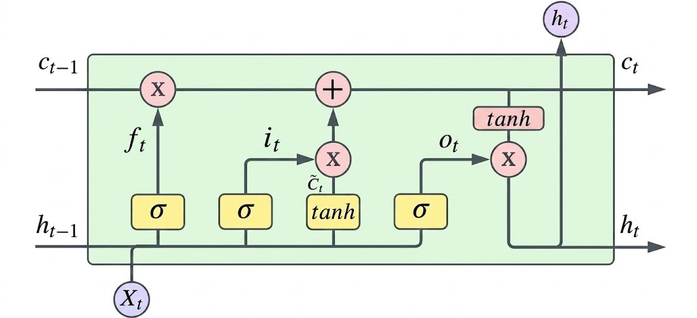
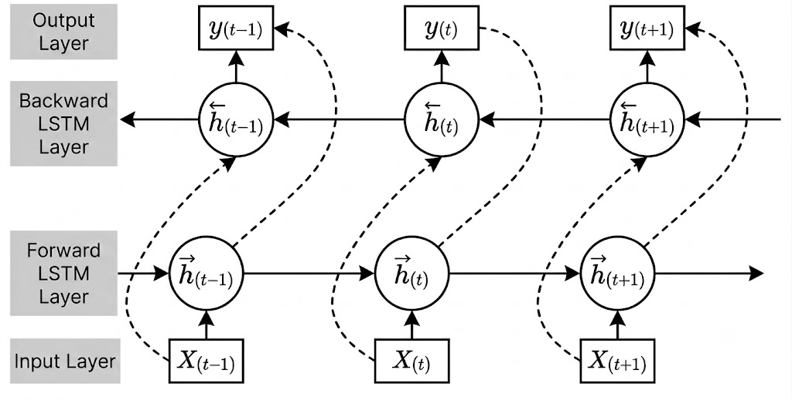

Personalized Continuous Glucose Monitoring
A personalized continuous glucose monitoring framework integrating BiLSTM prediction, Dynamic Time Warping, online learning, and anomaly detection to improve monitoring accuracy and reduce false alarms.
Why It Matters
Continuous glucose monitoring systems measure interstitial glucose rather than blood glucose directly, introducing physiological lag and potential prediction errors. In addition, conventional threshold-based alarms often generate false alerts caused by environmental fluctuations rather than true glycemic events.
This project developed a personalized monitoring framework to improve glucose prediction accuracy, estimate dynamic lag, and reduce false alarms in long-term CGM monitoring.
Framework

Prediction Module
BiLSTM Prediction
A Bidirectional Long Short-Term Memory (BiLSTM) network was used to model temporal glucose dynamics and generate short-term glucose forecasts from continuous CGM measurements.
Online Learning Update
Online learning continuously updated model parameters as new monitoring data became available, allowing rapid adaptation without full model retraining.
DTW-based Lag Correction
Dynamic Time Warping (DTW) was applied to estimate physiological delay and align predicted CGM signals with blood glucose measurements, enabling personalized correction of time lag.


Anomaly Detection
False Alarm Reduction
Multiple anomaly detection algorithms were evaluated to distinguish true glycemic excursions from transient fluctuations caused by environmental or sensor-related disturbances.
MCD and OCSVM achieved the most stable performance across different monitoring scenarios.

Results

Performance
My Contribution
Designed and implemented a personalized CGM monitoring framework integrating BiLSTM prediction, online learning, Dynamic Time Warping, and anomaly detection. Conducted model development, time-series analysis, algorithm evaluation, visualization, and experimental validation using multi-day continuous glucose monitoring data.